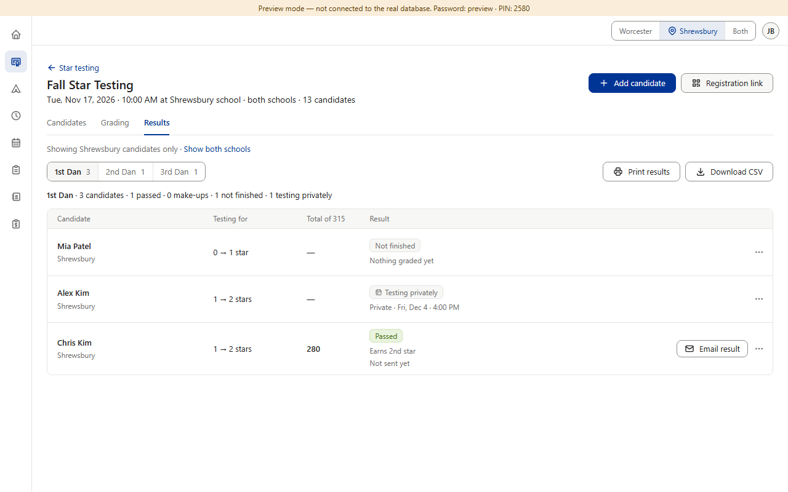
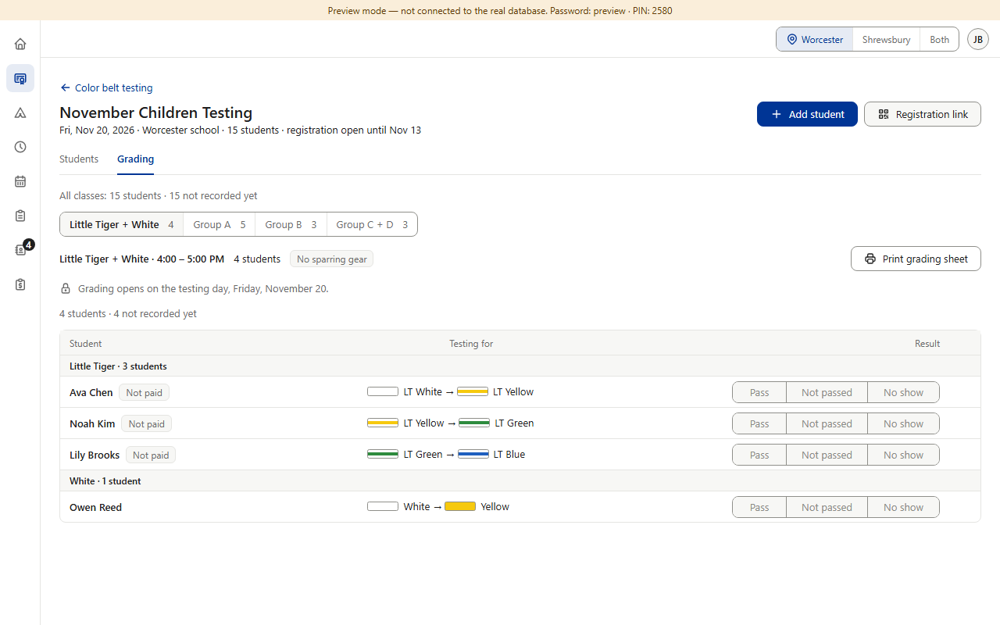
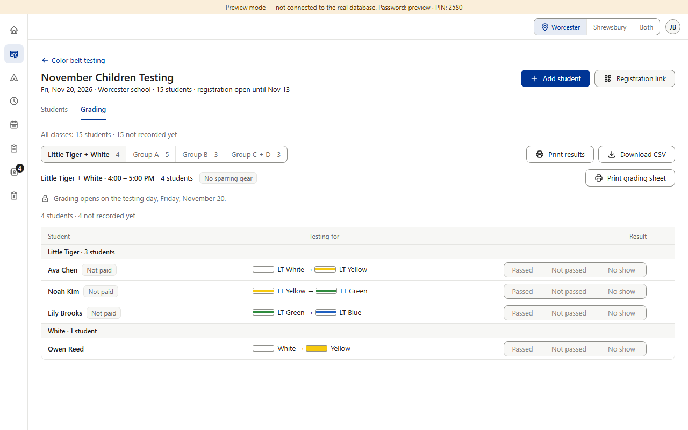

Approved in each section; one part was left for later. After a testing day, Star has a Results tab with result tags, Print results, an admin-only CSV of the whole event and Email result. Color Belt types results straight into its Grading tab and prints a grading sheet as the paper backup; a printed results list was left as “a later, separate decision” (v0.189), a CSV was never discussed, and there is no email because Color Belt's form asks names only (v0.132). The words differ: Color Belt “Pass / Not passed / No show”, Star “Passed / Make-up / Not finished”. Black Belt already plans Star's shape — Candidates · Grading · Results (its plan; contract 0025 approved on its branch, not merged yet). (Preview screenshots at PC size · fake data)


